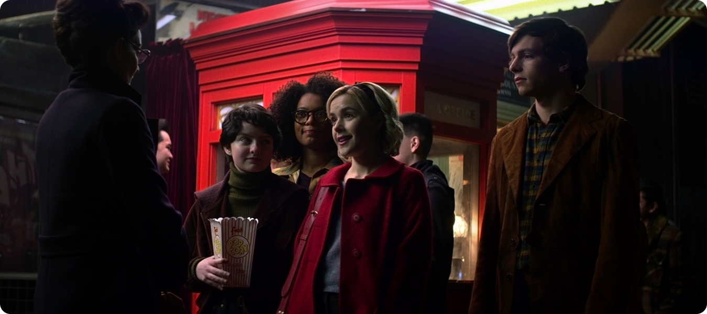
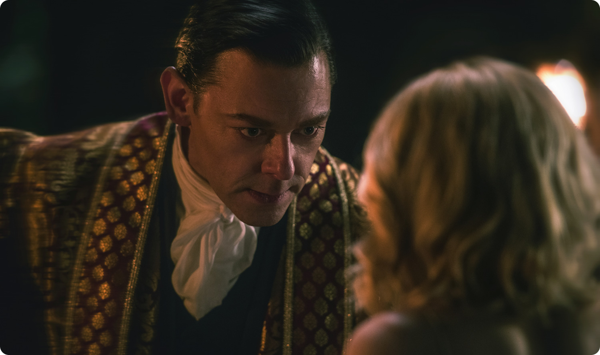
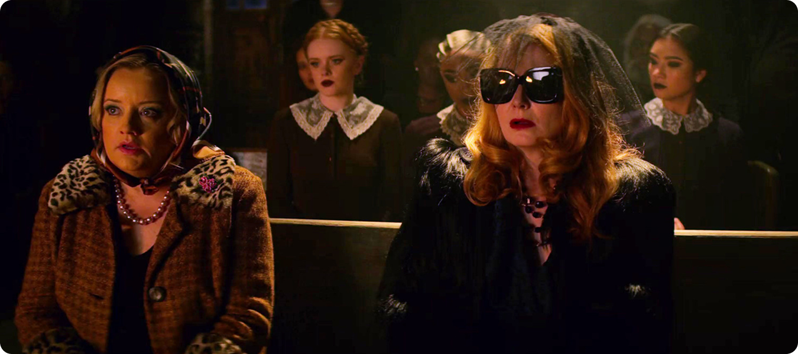
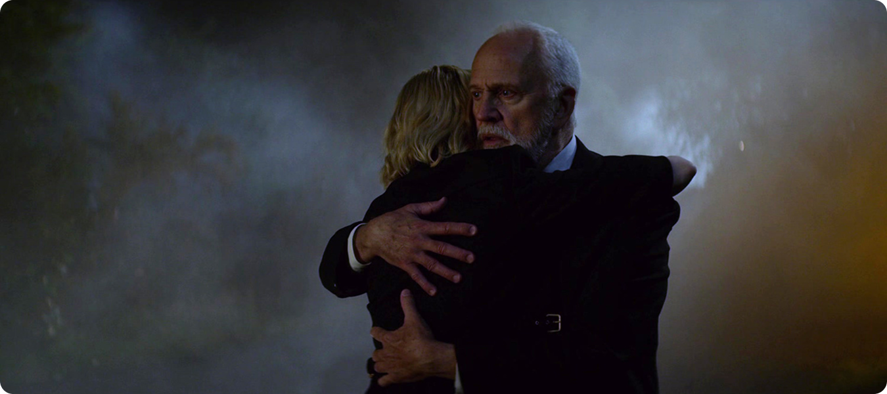
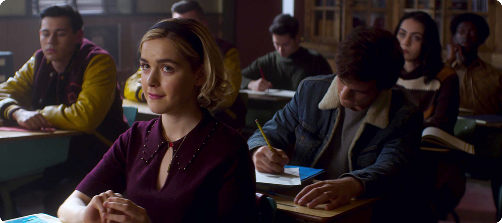
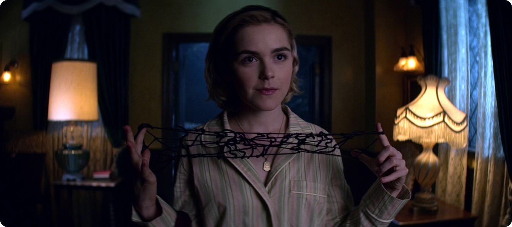

Два мира — ни одного дома
Сабрина существует на границе. В человеческом мире она
отличается, потому что обладает силой и знаниями, которые
делают её «другой». В мире ведьм она тоже
чужая — её сомнения, моральные ограничения и
стремление к самостоятельности идут вразрез с системой.
Важно, что ни один из этих миров не предлагает
ей полного принятия, потому что люди не понимают
её природу, а ведьмы требуют подчинения. Получается, что
обе стороны требуют отказаться от какой‑либо из частей,
формирующих личность.

Таким образом, выбор превращается в потерю. Чтобы стать
«полностью ведьмой», нужно отказаться
от человеческой морали. Чтобы остаться
«человеком», — подавить силу
и влияние.
Идентичность как конфликт, а не выбор
Классическая логика предполагает, что героиня должна сделать выбор
и обрести цельность. Однако сериал сознательно разрушает эту
модель. Сабрина пытается совместить несовместимое:
- сохранить мораль и использовать тёмную магию;
- быть независимой, оставаясь внутри системы;
- контролировать силу, не подчиняясь ей.

Это создаёт постоянное напряжение. Её идентичность
не фиксируется, а находится в процессе. Каждый
новый выбор не решает проблему, а лишь
усложняет её.
Иллюзия контроля

Сабрина часто действует так, будто способна управлять ситуацией и
формировать собственную судьбу. Однако система, в которой она
находится, гораздо сильнее. Церковь Ночи, фигура Тёмного Лорда и
сама структура мира ведьм постоянно ограничивают
её возможности. Это создаёт парадокс:
- она стремится к свободе;
- но вынуждена действовать в заданных рамках;
- её «выборы» часто предопределены.

Таким образом, её идентичность формируется не только
её решениями, но и давлением извне.
Почему Сабрина — это не «и то, и другое»

Можно было бы предположить, что Сабрина — это
гармоничное сочетание двух миров. Однако сериал показывает, что
такой баланс нестабилен. Она не просто «человек
и ведьма» — она персонаж, который постоянно
находится в состоянии расщепления.

Это делает её более реалистичной. Идентичность здесь
не статична, а конфликтна. Она формируется через ошибки,
противоречия и давление среды.
Вывод
Сабрина — это не фиксированная роль,
а динамичный процесс. Она не вписывается
ни в одну категорию, потому что сами категории
оказываются слишком узкими.
Сериал показывает важную мысль: попытка определить себя через
готовые рамки неизбежно приводит к внутреннему конфликту.
Настоящая идентичность не выбирается один раз, она постоянно
пересобирается под влиянием обстоятельств и решений.